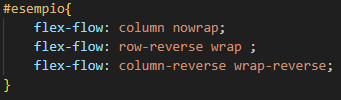

Adesso parleremo del Flex-Wrap. Di default gli elementi disposti con il layout flex tendono a rimanere in un unica riga.
Con questa proprietà noi potremo, in caso di necessità, far andare a capo il contenuto.
Possiamo inserire 3 parametri nel Wrap:
nowrap: gli elementi all'interno del contenitore non verranno adattati.
wrap: gli elementi all'interno del contenitore verranno adattati, fino al massimo a disporli in colonna.
wrap-reverse: uguale al wrap normale, soltanto che gli elementi verranno adattati al rovescio.
Esempio:
p.s. prova a restringere la pagina.
La proprietà Flex-flow è un "incrocio" tra le proprietà Wrap e direction.
I parametri che possono essere inseriti nel flex-flow sono gli stessi che possono essere inseriti nel direction o nel wrap.
Esempi generali di parametri Flex-flow:
Esempio di Flex-flow con: column wrap